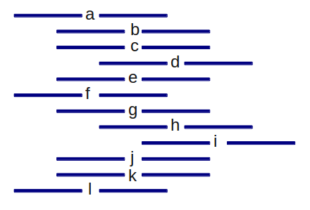
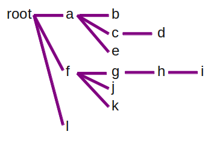

This project is about parsing indented text into a tree data structure, based on the level of indenting.
Well, no, really it's about me playing around with Lisp.
This code isn't anything you'd use straight out of the box, but this is a fairly common problem: You've got some sort of ad-hoc markup you're using in a text file - some sort of formatting you've been following just for readability - and you think with a bit of effort you could actually parse this and do something useful with it.
So you've got input that looks something like:

and you want to turn it into a data structure like this:

I implemented this in Ruby originally, then decided it might be a good project for trying out Lisp with. Originally, I just transliterated my Ruby logic into Lisp. It didn't really work, and the code just felt wrong. So I took a stab at doing it in a "Lispier" way. I'm sure this isn't how a Lisp veteran would do it, but it's definitely not how you would do it in most other languages, which was the real point of the exercise. The point isn't whether the end result is more compact, elegant, readable or whatever; the point is that it's a different way of looking at the problem. It's stretching exercises for my brain.